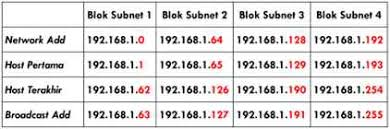
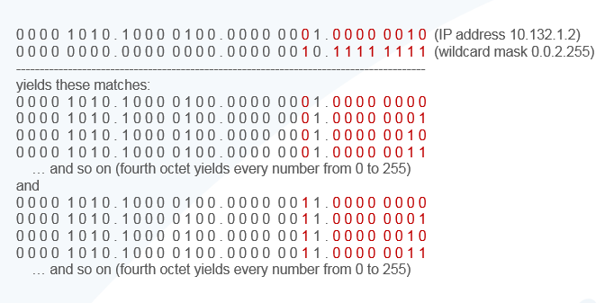
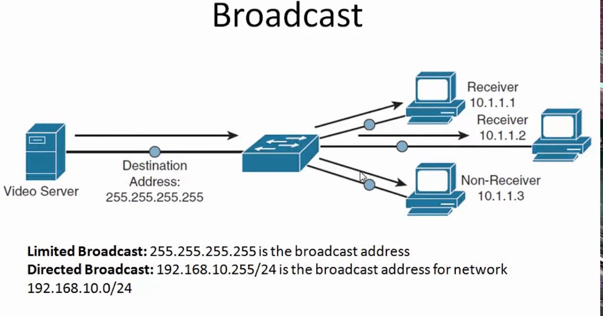

IPv4 Subnetting

Subnetting adalah teknik dalam pembagian klasifikasi IP Adddress v4.
Istilah dalam subnetting
Beberapa istilah dalam subnetting
CIDR
Adalah nilai / setelah IP, mempresentasikan jumlah nilai biner 1.
Jumlah subnet
Mengacu pada range untuk per subnet.
Jumlah host per subnet
Mengacu pada banyaknya host yang dapat dibuat per 1 subnet.Wildcard
Adalah nilai desimal dari nilai biner 0 dari CIDR.
Block subnet
Mengacu pada range untuk setiap per subnet.Host pertama dan terakhir
Adalah batas nilai IP yang digunakan oleh host/pengguna.Broadcast
Nilai IP spesial yang digunakan untuk mengirim ke seluruh host (IP digunakan oleh sistem).
Subnetting
Contoh untuk nilai IP yang akan disubnetting, IP 192.150.10.0/26
Analisis:
- IP Kelas = C (192)
- CIDR = /26
- Segmen = 192.168 (Network-ID) & 10.0 (Host-ID)
/26 = 11111111.11111111.11111111.11000000
Wildcard = 0 . 0 . 0 . 63